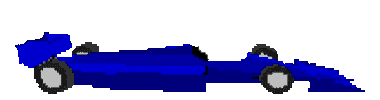

Az autók, amiket használunk 100%-ban elektromosak
Porsche March Indy
Ez egy igazán gyors autó, aminek segítségével gyorsan odaérnek a kuncsaftok a célhelyre.
A végsebessége: 230 KM/H
Jaguar XJR-9 IMSA
Előszeretettel vezetik taxisaink ezt a járművet, ugyanis ebben a járműben baromi jó rádió van.
A végsebessége: 215 KM/H
Porsche 962 IMSA
Igazán kényelmes, bőrülésekkel rendelkező jármű, amiben egy élmény az utazás, emellett igen tágas.
A végsebessége: 215 KM/H
McLaren Honda MP4/4
Igazán jó gyorsulási, és tapadási értékekkel, rádióval, és kényelmes székekkel ellátott jármű.
A végsebessége: 212 KM/H
Speedgate XSD
Ez az autó tágas belső térrel rendelkezik, hátul étkező asztal is található benne, nem rossz jármű.
A végsebessége: 245 KM/H
Ferrari 637 Indy
Ámulatba ejtő utazási élményben lehet része, ha ehhez az autóhoz van szerencséje, és emellett gyors is.
A végsebessége: 230 KM/H
Williams FW15
Olyan belső kialakítása, és hangrendszere van, hogy az mindent IS visz, igazán jó élmény vele utazni.
A végsebessége: 224 KM/H
Dauer 962 LM
Egy nyugati járgány, amit befogtak taxiként, amiből cégünk alkalmaz igen sok példányt, remekül kidolgozott autó.
A végsebessége: 245 KM/H
Ferrari 641/2 F1-90
A Forma 1-ből dobták a V12 motorokkal rendelkező járműveket az újabb motorokért, és taxi lett belőle.
A végsebessége: 205 KM/H
Ferrari 126 C3
Taxisaink nagyon szeretik ezt a járműtípust, mert igazán jó élmény a vezetése, és kitűnő hangrendszere van.
A végsebessége: 216 KM/H
Ferrari 126 C2
Megbízható járgány, remek kényelemmel, rádióval, és sebességgel rendelkezik, ezért használjuk.
A végsebessége: 216 KM/H
Ferrari 312 PB
Megnyerő külseje igazán megnyerő belsővel társul. A kényelem felsőfokú, ezért szeretik vezetni.
A végsebessége: 180 KM/H
Ferrari 333 SP
A kialakítása magáért beszél, ugyanis ebbe az autóba kettőnél több csomag is befér.
A végsebessége: 225 KM/H
Ferrari 312 T2
Szó sem érheti az autó elejét. Igen tágas, jó hangrendszerrel rendelkező, gyors, megbízható autó.
A végsebessége: 180 KM/H
Lola Cosworth Indy
Első osztályú autó, ami egy limuzint idéz, ha megnézzük a belső terét. Kitűnő teljesítménye miatt szeretik a taxisaink vezetni
A végsebessége: 234 KM/H
Penske Chevrolet Indy
Ha ez a taxi érkezik a kuncsafthoz, akkor úgy érzi, egy álomba csöppent. Ámulatba ejtő teljesítménye, és hangzásvilága van.
A végsebessége: 229 KM/H